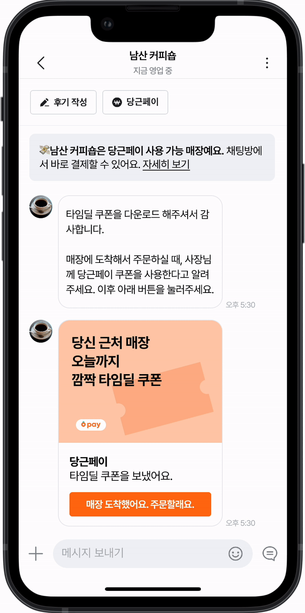

| Goal : Increase the local adoption of Karrot Pay
| Objective : Enhance the usage of Karrot Pay among local businesses and users
| Duration : 2 days
| Role : Research, Solution Sketch, Product Design, User Testing
| Tool : Figma
Karrot is a hyper-local community app that connects neighbors to buy, sell, and share items and services. Launched in South Korea in 2015, Karrot quickly grew in popularity by fostering trust and convenience within local communities. Its success is attributed to its user-friendly interface, strong focus on local interactions, and the ability to build a sense of community among users. By addressing the needs of hyper-local markets, Karrot has expanded rapidly, making it a go-to platform for neighborhood transactions and services.
However, the adoption of Karrot Pay, a feature designed for seamless transactions, remains lower than desired due to limited user awareness and perceived benefits.
Sprint Goals
The main goal of this sprint was to seek for a way to increase the local adoption of Karrot Pay. Our team aimed to increase the usage of Karrot Pay by enhancing its utility within local businesses.
Why this problem?
Despite Karrot's success in connecting individuals for personal transactions, the adoption of Karrot Pay in local businesses was lagging. This posed a significant barrier to achieving Karrot's mission of becoming a hyper-local community platform not just for personal but also for business transactions.
Why local businesses?
Karrot Pay can be used for secondhand transactions between users, we recognized that leveraging the existing local business feature could boost the frequency of Karrot Pay transactions by offering greater potential for sustained usage.
To achieve this, we focused on finding a solution that would incentivize both businesses and users to adopt Karrot Pay more actively. We hypothesized that offering temporary, exclusive benefits through coupons could drive initial usage and demonstrate the value of Karrot Pay to both businesses and users.
Ideation

User journey map

"How might we...?"

HMW questions sorted
We mapped out the journey of both customers and local business owners, identifying pain points and opportunities to introduce Karrot Pay as a solution.
On the customer's side, the journey begins with launching the Karrot app, browsing the feed, and finding the desired service. They then discover offered coupons, visit the business to utilize the service, top up their Karrot Pay account if necessary, and complete the payment using Karrot Pay. On the local business owner's side, the journey starts with registering for a business profile, advertising their products or services, and registering coupons for users. The business then welcomes users who come to use the coupons, provides the relevant services, and finally, withdraws the money earned through Karrot Pay.
As part of our design thinking process, each team member contributed How Might We questions to address the identified pain points and opportunities. We then sorted these questions according to their relevance and importance, allowing us to prioritize the key aspects that needed to be addressed. As a result, we identified the most important challenges:
1. How might we make Karrot Pay more accessible to users?"
2. How might we emphasize the necessity of Karrot Pay?"
3. How might we design a feed that facilitates search experience?"
These questions formed the foundation of our design strategy, guiding us in creating solutions that would effectively enhance the user experience with Karrot Pay.
Solution Sketch

Based on the journey map, we each brainstormed and sketched possible solutions, focusing on ease of use and integration into the current app interface. We worked on these sketches separately to ensure a diverse range of ideas. After individually designing our solutions, we came together to discuss and evaluate each one, ultimately converging on the most rational and effective ideas through collaborative discussion.
Proposed Solution
 We reached to a reasonable agreement of creating an event-based coupon system where users could receive benefits by making payments through Karrot Pay. These coupons would be available for a limited time and could only be redeemed via Karrot Pay, thus incentivizing users to use the feature.
We reached to a reasonable agreement of creating an event-based coupon system where users could receive benefits by making payments through Karrot Pay. These coupons would be available for a limited time and could only be redeemed via Karrot Pay, thus incentivizing users to use the feature.
This approach aligns with Karrot's mission of hyper-local engagement by extending the app's utility beyond personal transactions to local businesses. By introducing time-limited coupons, we aimed to create a sense of urgency and immediate value, addressing the current lack of perceived benefits associated with Karrot Pay.
Storyboard

We created a storyboard to visualize how users would interact with the coupon system, from discovering the time deal coupons to making a purchase with Karrot Pay, then further discussed the key metrics that could be improved.
Expected Key Metrics
1. Increase in new users of Karrot Pay through the local 'Time Deal Coupon' events.
2. Higher transaction volume through Karrot Pay compared to the number of coupons downloaded.
Through this solution, we aimed to enhance user engagement and drive the adoption of Karrot Pay. By incentivizing users with time-limited deals, we sought to create a seamless and rewarding experience that would not only attract new users but also encourage repeated use of Karrot Pay for local transactions. This approach was designed to build stronger connections between users and local businesses, fostering a more active and engaged community on the Karrot platform.
Prototype


Using Figma, we developed a high-fidelity prototype of the coupon system within the Karrot app, ensuring a seamless user experience.
Feel free to check out the entire screen here.
User Testing
We conducted interviews and usability tests with potential users to gather feedback and iterated on the design based on their input. To ensure the current design is effectively communicating its intent, we focused on three key aspects: discoverabilty, findability, and usability. Discoverity to ensure users recognize that the feature exists, findability to ensure users are able to locate the feature, and finally usability to ensure users to be able to use the feature withoutany issues. The selected interview questions are as follows.
1. How would you find a coffee shop near you that's holding a special event?
↳ Check if the user uses filter function to search the coffee shop on map
2. Suppose you are at the coffee shop and grab coffee at a discounted price.
↳ Check if the user directly accesses CHAT instead of MY PAGE > Coupons Received
3. How would you ensure your money went through successfully?
↳ Check if the user is aware of Karrot Pay transaction
Tasks were provided for participants in the order they would likely perform them, avoiding the use of specific terms or labels shown in the UI when instructing users. This approach allowed us to observe how intuitively users interacted with the design and identify any areas of confusion or difficulty. Based on the insights gathered, we refined our design to enhance overall user experience.
Final Look based on User Feedback
Based on user feedback, several improvements were made to enhance the user experience.
One user commented that the toast pop-up that shows up after downloading the coupon wasn't grabbing people's attention and didn't appear clickable. This caused users to miss the fact that the coupon could be used directly through the chat tab. Instead, they navigated to "My Page," accessed their downloaded coupons, clicked the "Use Coupon" button, and were then directed to the chat. To address this, we improved the UI and UX writing of the pop-up to make it more noticeable and interactive and made sure users understand that the notification pop-up is coming from the chat tab.
Another suggestion was to make the new [Time Deal Coupon] more visually prominent on the local business detail page. Users felt that a visually striking banner would help them recognize the new time-limited deal. We implemented this feedback by incorporating eye-catching banners such as adding a colored border on the coupon page, ensuring they stand out to users.
These changes were made to ensure that the coupons are easily discoverable and that users can effortlessly navigate the process of using them through Karrot Pay.
Lessons & Takeaways
Through this project, I gained valuable insights into the current services offered by Karrot and Karrot Pay. One of the key lessons was understanding the importance of clear and intuitive UI/UX design to enhance user engagement and adoption. The feedback we received highlighted the need for features to be easily discoverable and seamlessly integrated into the user experience. This project underscored the importance of visual prominence and interactive elements in guiding users through new functionalities.
Working alongside teammates, including some who are experienced product designers, provided me with a unique opportunity to gain hands-on industry experience. This collaboration allowed me to quickly immerse myself in the design thinking process, where I learned to think rapidly and creatively under time constraints. I also learned the value of creating efficient and practical designs that address user needs and business goals.
Additionally, this project provided a deep dive into using Figma for creating interactive prototypes. I learned how to leverage Figma’s capabilities to develop engaging and realistic prototypes, which significantly enhanced our ability to test and iterate on our designs.
Overall, this project was a significant learning experience, deepening my understanding of design and user experience. It highlighted the importance of collaboration, user-centered design, and the practical application of design tools like Figma. I am now more confident in my ability to create impactful designs that enhance user engagement and drive the success of a product.